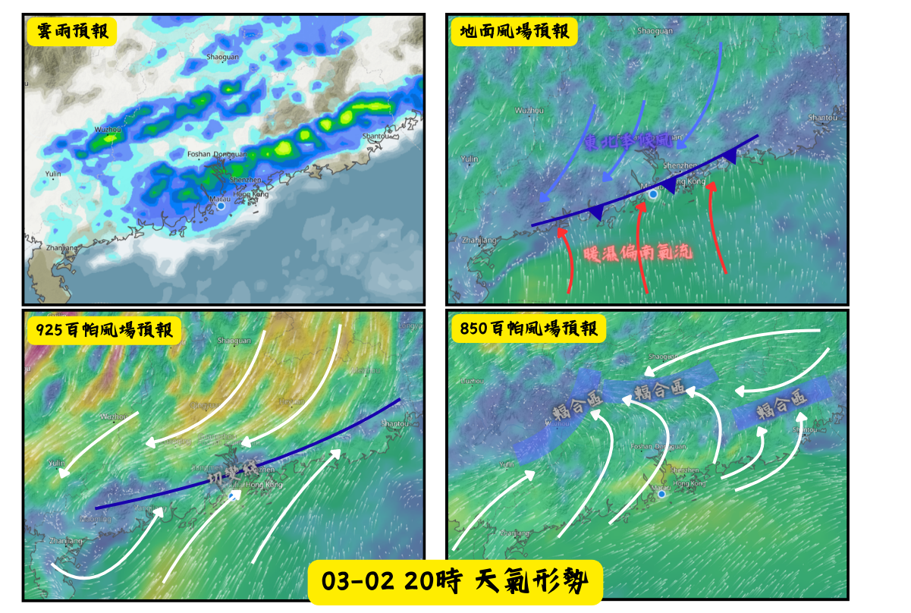
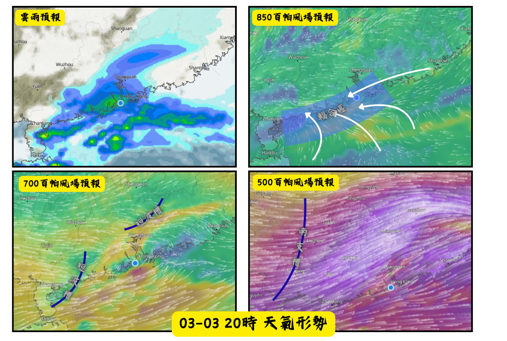

【華南地區（03-02—03-03）大範圍降水天氣分析】
發佈時間：2026年03月01日21時00分
天氣系統整體趨勢
一股暖濕偏南氣流正為廣東沿岸帶來潮濕天氣。 位於中國東南部内陸的低壓槽正爲該區帶來降水天氣，預料該道低壓槽將會在今明兩日南壓，會逐漸轉變爲冷鋒。

03-02天氣概況分析
預料低壓槽將逐漸轉化為冷鋒，並南壓至廣東沿岸；與此同時，925百帕切變線亦同步南壓至沿岸一帶，850百帕層，一股偏南氣流將與廣東內陸的偏東氣流匯聚，形成輻合區。
受上述系統影響，3月2日降水區域將會自西北向東南影響粵港澳地區（雷州半島除外）。

03-03天氣概況分析
預料850百帕北部灣附近的低渦系統與700–500百帕短波槽將整體東移，同時850百帕偏南氣流與偏東氣流匯聚形成的輻合區亦同步東移。
受上述系統影響，3月3日先由東移的低渦及短波槽為雷州半島帶來不穩定天氣，其後輻合區與短波槽繼續東移，為珠江口沿岸帶來降水天氣，廣東內陸及粵東地區則以弱降水天氣為主。

後期天氣趨勢
受東北季候風影響，本周中期至後期，粵港澳地區早晚天氣清涼，天色逐漸轉好。